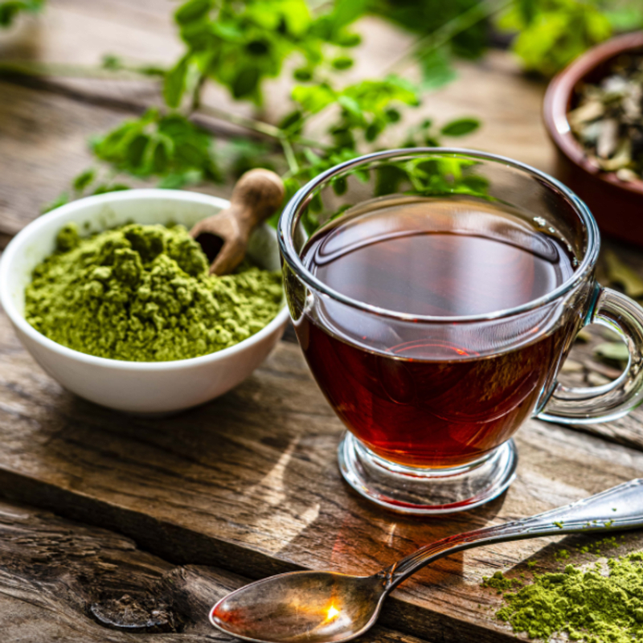

Appliances
Choosing the right appliance is the first important decision that will lead you towards creating the best iced drinks. Please consider carefully the following parameters to choose from.
- Mix Chamber Volume
- Motor power
- Automatic Shut-Off
Tea
Choosing the right tea is very important. Iced tea will taste differently than the hot one, so everyone has to make a few experiments in order to find the right flavour that they will prefer.
According to our surveys these are considered the best flavours for the iced tea...
- Peppermint Tea
- Green Tea
- Hibiscus Tea
- White Tea
- Chamomile Lemongrass Tea.
Preparing tea
Preparing iced tea is a simple and satisfying process. It includes a few easy steps that can be done in a few minutes.
- Add loose tea or tea bags
- Fill in tank with water
- Add some ice
- Add fresh/frozen fruits
- Adjust the brew strength
- Enjoy your tea!
How to Make Better Iced Tea
Selecting the Best Tea and Brewing Method for Perfect Iced Tea
- The Best Type of Tea for Iced Tea
- That signature taste of iced tea comes from black tea. It is the preferred type of tea, and it doesn't need to be made specifically for iced tea. Most tea bags that are sold for iced tea are orange pekoe tea. This is not a specific type of black tea but a grading system that indicates the quality of the tea leaves. View Example.
- Hot Brew and Chill Iced Tea
- The hot brewing method is the preferred way to make iced tea. It produces a bold iced tea, takes a few minutes to brew, and is ready to drink within the hour. View Example.
- Cold Brew Iced Tea
- Cold brew iced tea is also called refrigerator tea. It's a hands-off brewing method and very easy, but it does take longer. In terms of taste, cold brew is softer than hot brewed tea because heat releases more of the tea's natural tannins. If you are not fond of tea's mouth-drying effect and have time to wait, it is a great alternative. View Example.
For more information about brewing methods, visit External Tea Website.